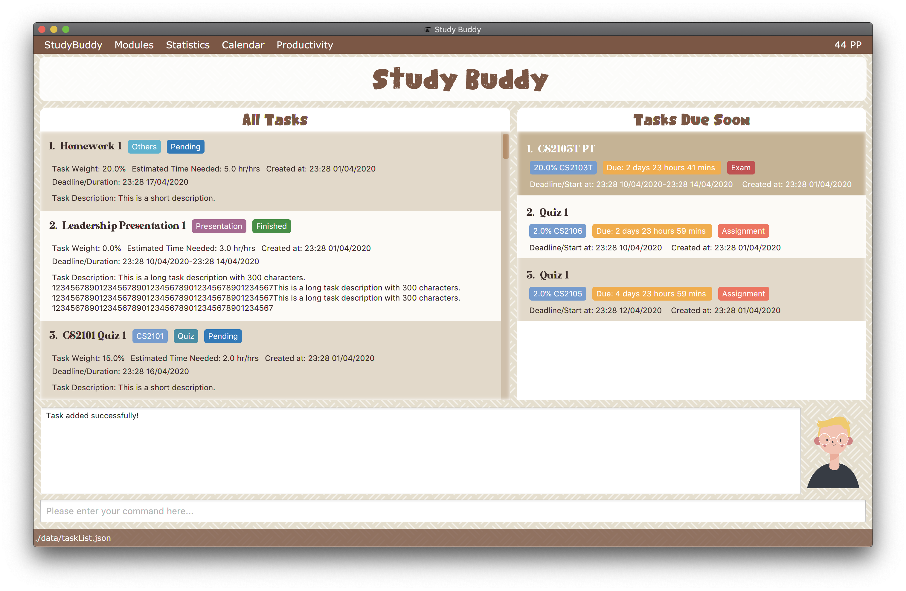
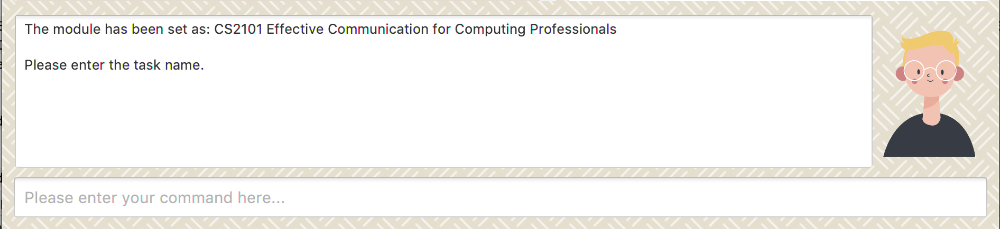
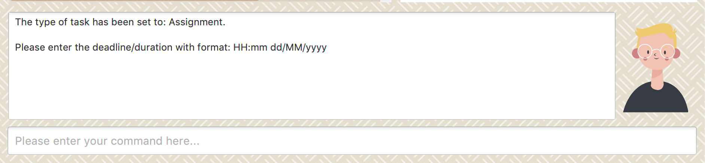
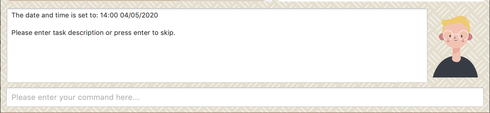
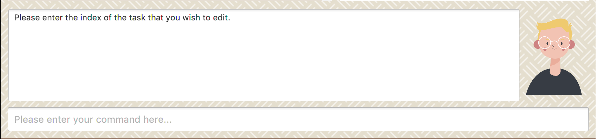
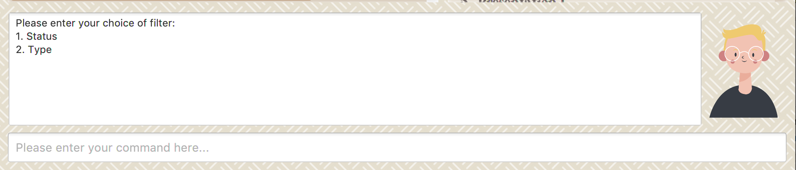
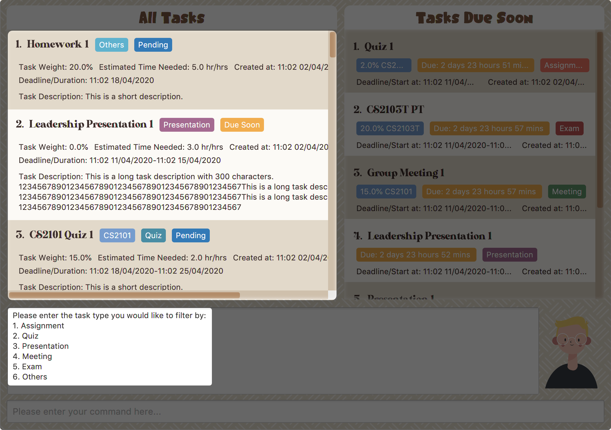

By: Team Drag&Drop Since: Jan 2020
1. Introduction
Study Buddy is a desktop application which is designed for students who wish to manage their module related tasks. More importantly, Study Buddy is optimized for those who prefer to work with a Command Line Interface (CLI) while still having the benefits of a Graphical User Interface (GUI).
You will never have to remember long, wordy commands to use your command line interface, since Study Buddy provides an interactive way of communication, which not only helps to prevent typos, but also makes the application much easier to use!
If you can type fast, Study Buddy can get your module management done faster than traditional GUI apps.
Currently, Study Buddy support both Windows and Mac systems. If you are interested, please jump to the Section 2, “Quick Start” to get started.
Hope you enjoy!
2. Quick Start
-
Study Buddy relies on a particular computer environment to operate correctly, thus to enjoy it, you need to have
Java 11or above installed in your computer. -
When your computer is ready, you can download the latest
studybuddy.jarto get your Study Buddy. -
To better manage your tasks, you may copy the file to the folder you want to use as the home folder for the Study Buddy.
-
Last, double-click the file to start the app and the dashboard should appear in a few seconds.
Figure 1. Study Buddy Dashboard -
Jump to Section 3.1, “Dashboard” to get more information about dashboard.
-
To view a list of available command, you can key in
helpand click Enter. A more detailed description of our features is available in Section 4, “Features” of this document.
2.1. Commonly Used Symbols
| This symbol indicates something you should take note of. |
| This symbol indicates a tip that you could use. |
| This symbol indicates an aspect that should be used with caution. |
| This symbol indicates something to which we want to draw your attention. |
2.2. Useful tips
-
You may need to adjust the size of the Study Buddy window when you launch it.
-
Make sure not to use any extra white spaces before or after commands. Study Buddy might consider it as an invalid command.
-
The scroll bar on the right of the response box can be used to view the entire reply.
-
At any point during the execution of a command, you can use
quitto quit the command and start over/try a different command. -
Study Buddy will analyze your input and reply accordingly. It utilizes an "interactive command prompt". (explained in each command’s description under Section 4, “Features”)
-
In this document, [enter] indicates hitting the enter key on your keyboard.
-
In this document, | indicates an alternative option (i.e. A | B implies A or B).
-
A task’s index number, refers to the number displayed on the left of a task in All Tasks panel. Note that the index of the same task could be different after
filter,findandsortcommands.
3. User Interface Introduction
The enjoyable user interface of Study Buddy provides you with better user experience. Especially its lovely colour themes and vivid animations can release the pressure you have accumulated from school.
3.1. Dashboard
The dashboard is the landing page each time the application is launched.
It consists of different components that can interact with you and provide you with meaningful information.
3.1.1. Navigation Menu Bar
The menu bar lays at the top of the dashboard and is primarily used for navigation.

3.1.2. All Tasks Panel
By default, the All Tasks Panel lists all unarchived task records with their detail information in the order of creation date and time.
- You can
-
-
Reorder them using command Section 4.1.10, “Sort”.
-
Filter them using command Section 4.1.13, “Filter” or Section 4.1.11, “Find”.
-

Task Badges
To bold the important information of each task in All Tasks Panel , we use Badges to highlight Module Code,
Task Type and Task Status of each task.
- Module Badges
-
-
All in light steelblue.
-
If the task is not related to any module, the Module Badges will be omitted.
-
- Task Type Badges
-
-
Different Type Badges are in different colours.
-
- Task Status
-
-
Different Task Statuses using different colours.
-
The task which is due in next week (i.e. 7 days) will be marked as
Due Soonstatus, sometimes you may need to use Section 4.1.14, “Refresh” command to refresh the status of all tasks.
-
3.1.3. Tasks Due Soon Panel
The tasks which will due in next week (i.e. 7 days) will be listed here. You can jump to Section 4.3, “Due Soon Tasks” to get more details.

Task Badges
To bold the important information of each tasks in Tasks Due Soon Panel , we use Badges to highlight Weight & Module Code,
Deadline/ Starting Date Counting Down and Task Type of each tasks.
- Weight & Module Code
-
-
All in steelblue.
-
It provides weight and the module code of the task.
-
- Deadline/ Starting Date Counting Down
-
-
All in light orange.
-
It displays the counting down for the tasks' deadline or starting date.
-
More information please refer to Section 4.3, “Due Soon Tasks”
-
- Task Type Badges
-
-
Different Type Badges are in different colours.
-
3.1.4. Interactive Prompt Box
The Interactive Prompt Box lays at the bottom of the user interface.
To interact with Study Buddy, you can enter the desired command in the box with the words Please enter your command here…
and press Enter to execute.
The reply from Study Buddy will be displayed in the box next to the cartoon boy.

| To get more detailed information about different user interface components, please refer to Section 4, “Features”. |
4. Features
4.1. Basic features
4.1.1. Help :
This function displays a list of interactive commands that you can use. It also provides a link to this document, (our user guide).
| This is the command you should use if you are unsure of what to type for a certain command, |
Example:
Say you have forgotten the format of a command and need some help.
Study Buddy provides a help command for your convenience!
To help:
-
Initiate the command using keyword
help -
Study Buddy should respond with:
Figure 6. Response to 'help'
| Remember to scroll down to see the entire reply. |
4.1.2. Add
This command is for you to record a new task into Study Buddy.
-
Through the interaction, task’s details will be collected.
-
Required information: task name, task type, task deadline or duration
-
Optional information: module, task description, task weight, estimated number of hours needed
-
Input format requirement:
Information Type Format Requirement Example MODULE CODE2 or 3 letters + 4 digits + 1 letter (optional)
CS2101, CS2103T,
LSM1101INDEX NUMBER OF
MODULEInteger number
1
TASK NAMENo more than 20 characters
Demo presentation
INDEX NUMBER OF
TASK TYPEInteger number
1
TASK DEADLINE
OR DURATIONDifferent task types apply different date and time format
Deadline (for Assignment):
HH:mm dd/MM/yyyyDuration (for other task types):
HH:mm dd/MM/yyyy-HH:mm dd/MM/yyyyHH → hour, mm → minutes, dd → date, mm → month, yyyy → yearAssignment:
23:59 01/05/2020Meeting:
14:0 15/04/2020-16:0 15/04/2020TASK DESCRIPTIONNo more than 300 characters
this is a valid description
TASK WEIGHTPositive integer or float number from 0.0 to 100.0
12.0
ESTIMATED NUMBER OF HOURS NEEDEDPositive integer or float number
10.0
-
Other constraints::
-
The application does not allow you to enter a name that has special characters (any character that is not a letter in the alphabet).
-
The application does not allow you to assign date time that has already passed to a task. It must be a time in the future.
-
For duration, the two dates should follow the order of
start date-end date, theend dateshould be later thanstart date. -
The total weight of tasks under the same module is capped to 100.0.
-
Both
archivedandnot archived taskswill be taken into consideration.
-
-
All
index numbersentered should be positive and within a valid range. (i.e When there is only 5 modules available, the valid module index number range is 1 to 5).
-
-
Adding duplicate tasks:
-
Look at Section 4.1.3, “Add duplicates” for more information.
-
-
To add:
-
Initiate the command using keyword
add -
Study Buddy should respond with
a list of available modulesas: Figure 7. Reponse to 'add', asks for module
Figure 7. Reponse to 'add', asks for module -
You can link this task with a module by entering its
MODULE CODE|INDEX NUMBER OF MODULEhere , or you can press enter to skip. Here we use1(CS2101) as an example. -
Study Buddy should respond with the module selected and the request of task name as:
Figure 8. Asks for task’s name -
Here we use
new taskas an example. -
Study Buddy should respond with the task name defined and the request of task type as:
 Figure 9. Asks for task’s type
Figure 9. Asks for task’s type -
Here we use
1(Assignment) as an example. -
Study Buddy should respond with the task type defined and the request of task’s date time information as:
Figure 10. Asks for task’s date time -
Here we use
14:00 04/05/2020as an example. -
Study Buddy should respond with the date time defined and the request of task’s description as:
Figure 11. Asks for task’s description -
Here we use
new task descriptionas an example. -
Study Buddy should respond with the description defined and the request of task’s weight as:
 Figure 12. Asks for task’s weight
Figure 12. Asks for task’s weight -
Here we use
10as an example. -
Study Buddy should respond with the weight defined and the request of the estimated number of hours needed as:
 Figure 13. Asks for estimated number of hours needed
Figure 13. Asks for estimated number of hours needed -
Here we use
10as an example. -
Study Buddy should respond with the task details collected and the request of your confirmation to perform the command as:
 Figure 14. Asks for user conformation to add a new task
Figure 14. Asks for user conformation to add a new task Figure 15. Task details collected
Figure 15. Task details collected -
Now, by pressing enter the new task will be added into your Study Buddy.
-
Study Buddy should respond as:
 Figure 16. New task added
Figure 16. New task added
Remember, you can use quit command to quit at any step.
|
4.1.3. Add duplicates
This command accounts for you adding duplicate tasks. When you attempt to add a duplicate, the name will be modified slightly so that you can differentiate them.
Example:
Say you have tried to add a task, you enter all the fields needed and at the end, you realise that you have already added this task.
Study Buddy lets you add duplicate tasks with a slight modification! So, now you can add the task and edit it as needed.
| A task is considered duplicate when the name, type, module, description, weightage, estimated time cost and deadline are the same. (Status is not checked) |
To add duplicates:
-
Follow the same steps as in Section 4.1.2, “Add”, but enter a duplicate task.
-
Study Buddy should respond with:
 Figure 17. Reponse to adding a duplicate
Figure 17. Reponse to adding a duplicate -
Type in
yesif you would like to continue andnoif you do not. -
If you type
yesand press enter -
The Study Buddy should respond with:
 Figure 18. Response to adding duplicate
Figure 18. Response to adding duplicate -
As you can see in the snippet above, Study Buddy will append a number in brackets to the task name. This number corresponds to the number of times this task name has been duplicated.
If you add two duplicates of a task (eg: task(1) and task(2)), and then delete task(1), when u try to duplicate it again, it will get added as task(3). The number will not reset to 2, because this is the third time you are attempting to duplicate. -
If you choose to enter
noat step 2, this is what you will see. Figure 19. Response to choosing not to add
Figure 19. Response to choosing not to add
| You can view all tasks that have been auto-edited this way, using the Section 4.1.8, “View duplicates” |
| Use the Section 4.1.4, “Edit” to edit your duplicated tasks! |
4.1.4. Edit
This command is for you to edit an existing task. To indicate the task you want to edit, you need to provide its index number.
Example:
When you want to update some details of a task or there are some typo in an existing task. You can use this command to edit as you wish.
Constrains
-
Each new value and index number entered will be checked under the same constrain of add command.
-
When editing weight or module, the application will also make sure the total weight of related module’s tasks will not overflow (i.e. exceed 100).
-
You cannot edit a task to be a duplicate. i.e all the fields cannot be the same as a task that already exists.
To edit:
-
Initiate the command using keyword
edit -
Study Buddy should respond with:
Figure 20. Reponse to 'edit' -
Type the index of the task you want to edit. here use
1(Homework 1) as an example. -
The Study Buddy should respond with:
 Figure 21. List of editable fields
Figure 21. List of editable fields -
Type the index of the field you want to edit, here use
2(task name) as an example. -
The Study Buddy should respond with:
 Figure 22. Asks for new task name
Figure 22. Asks for new task name -
Enter new task name, here use
Updated Taskas an example. -
The Study Buddy should respond as below with updated field.
 Figure 23. Task edited
Figure 23. Task edited
4.1.5. Done
This command is for you to mark a task as Finished.
Constrains
-
A Finished task cannot be marked as Finished again.
To done:
-
Key in
doneand press enter, you should get this prompt:Figure 24. Asks foe task index. -
Now key in the index of the task you wish to complete.
-
Press enter again to confirm your change.
Figure 25. Asks for confirmation -
Task set to
Finishedsuccessfully! Note that the task in your task list has the tagFINISHED. Figure 26. Done result
Figure 26. Done result
You can choose to archive your completed task using the archive command. Check more details
from Section 4.1.9, “Archive/ Unarchive”.
|
4.1.6. Clear
This commands clears all data in the Study Buddy.
| Be careful with this command! It will remove any data you may have entered into the Study Buddy and you cannot retrieve it. |
Example:
Say you have Finished a semester and would like to clear everything in your Study Buddy and start over.
You can always clear everything!
To clear:
-
Initiate the command using keyword
clear -
Study Buddy should respond with:
 Figure 27. Response to 'clear'
Figure 27. Response to 'clear'Remember that you can enter quitif you wish to go back! -
Press enter again to confirm
-
Study Buddy has been cleared completely!
 Figure 28. View empty Study Buddy
Figure 28. View empty Study Buddy
4.1.7. Delete
This commands deletes a task from the existing list, using the index provided by you.
| Once a task is deleted, it cannot be retrieved. Use this command with caution! |
Example:
After having added a task, you realise that there has been a change and you do not need to do that task anymore.
Study Buddy provides you an option to delete that task from the list!
To delete:
-
Initiate the command using keyword
delete -
Study Buddy should respond with:
 Figure 29. Response to 'delete'
Figure 29. Response to 'delete' -
Type the index of the task you want to delete.
 Figure 30. Asks for confirmation
Figure 30. Asks for confirmation -
Press enter again to confirm
-
Task has been deleted! You will notice that the task at the index you selected has disappeared from the list of tasks.
 Figure 31. Updated All Tasks Panel
Figure 31. Updated All Tasks Panel
4.1.8. View duplicates
This commands filtered all duplicated tasks in the list i.e tasks that have a number appended to their names.
Example:
Say you want to go back and edit all the tasks that are duplicated in your list. Yet you do not want to scroll through the entire list to find them.
Study Buddy provides you an option to view all your duplicate tasks in the list!
| You will still need to navigate to the main list and use that index to perform any index based operations (eg: delete, edit etc) |
To view duplicates:
-
Initiate the command using keyword
view duplicates -
Study Buddy should respond with:
 Figure 32. Response to 'view duplicates'
Figure 32. Response to 'view duplicates' -
Press enter again to confirm
-
Duplicate tasks have been filtered!
 Figure 33. Updated list of duplicate tasks
Figure 33. Updated list of duplicate tasks
| In order to navigate back to the main list, use Section 4.1.12, “List” |
4.1.9. Archive/ Unarchive
This commands stores the specified task into a separate list.
Example:
After a hard days work, you completed some tasks. You don’t want them in your to-do list anymore, but you don’t want to delete them; some of the information in the task card could still be useful.
You can always store them in an archive!
To archive:
-
Initiate the command using keyword
archive -
Study Buddy should respond with:
 Figure 34. Response to 'archive'
Figure 34. Response to 'archive' -
Type the index of the task you want to archive, here use
1(Leadership Presentation) as an example. -
Study Buddy will ask for your confirmation before archive the target task.
Figure 35. Asks for confirmation -
Press enter again to confirm, the task will be archived and the user interface will update.
Figure 36. Task is archived successfully -
You can view the archived task under the
StudyBuddy→Archived Taskstab. Figure 37. Navigates to archived tasks
Figure 37. Navigates to archived tasks Figure 38. Archived tasks
Figure 38. Archived tasks
| If you attempt to unarchive a task that already exists in the main list, the name will automatically be appended with a number in order to avoid duplication. This is done in the same way as Section 4.1.3, “Add duplicates” |
4.1.10. Sort
This command is for you to reorder the task list in All Tasks panel.
Currently you can sort tasks by their:
-
Deadline / Task Start Date
-
Task Name
-
Creation Date & Time
Example
When you want to sort all your unarchived tasks by their deadline or start date, you may utilize this command to achieve the desire order.
To sort:
-
Initiate the command using keyword
sort -
Study Buddy should respond with:
Figure 39. Response to 'sort' -
Type the index number of sort term and press enter.
Figure 40. Asks for sort term -
Press enter again to confirm
-
The tasks in All Tasks panel will be sorted accordingly.
 Figure 41. Sorted tasks
Figure 41. Sorted tasks
|
The tasks in All Tasks panel will not change back to the original order by itself. You can use sort → Creation Date & Time to do so.
|
4.1.11. Find
Finds tasks whose names contain any of the given keywords.
To find a task:
-
Initiate the command with
find. -
Study Buddy should respond with:
Figure 42. Response to 'find' -
Enter the keyword that you want to search for, e.g. quiz, and press enter to confirm sorting.
-
You have found a list of tasks that contain your keyword!
Figure 43. Find result
| To navigate back to the always on display list of tasks, you can use the Section 4.1.12, “List” function. |
4.1.12. List
Oh no! How do I get the original list back after using find? Calm down and use the list command!
The list command lists all the tasks that have been created in StudyBuddy.
To use the list command:
-
Initiate the command with
list. -
Done! All your tasks are listed once again!
 Figure 44. List result
Figure 44. List result
4.1.13. Filter
This commands helps you filter your tasks by category. The two categories available are status and type.
| Note that Due Soon tasks are already filtered for you. Refer to Section 4.3, “Due Soon Tasks” |
| To navigate back to your main list, check out Section 4.1.12, “List” |
Example:
Say you want to view a list of all your Pending tasks.
Study Buddy provides an option to filter your list!
To filter:
-
Initiate the command using keyword
filter -
Study Buddy should respond with:
Figure 45. Response to 'filter' -
Enter your choice. If you enter 1, you have chosen to filter by status.
 Figure 46. Response to filter by 'status'
Figure 46. Response to filter by 'status' -
You can then proceed to choose what status type you would like to filter by. Here we have filtered by "Pending" as an example.
 Figure 47. Response to filter by status tag 'Pending'
Figure 47. Response to filter by status tag 'Pending' -
At point 3 above, if you enter 2 instead, you have chosen to filter by task types.
Figure 48. Response to filter by task 'type' -
Once again, imagine your study buddy currently looks like Figure 30 above. (at point 4)
-
You can then proceed to choose what task type you would like to filter by. Here we have filtered by "assignment" as an example.
 Figure 49. Response to filter by task type 'assignment'
Figure 49. Response to filter by task type 'assignment'
4.1.14. Refresh
This commands refreshes the list of tasks Due Soon as well as status tags.
| Due soon list shows tasks due within the next week. Details are in Section 4.3, “Due Soon Tasks” |
| Status tags include information on the tasks' status. Details are in [Status Tags] |
Example:
Say you left Study Buddy open for a few days. When you come back, you notice that the time left for the deadline on the Due Soon tasks is not accurate.
You can refresh them!
| You can use this command to update the time left tag on due soon tasks. |
To refresh:
-
Say this is what Study Buddy looks like.
 Figure 50. Current state (needs to be refreshed)
Figure 50. Current state (needs to be refreshed)Suppose you notice that the task "Homework 1" is still in pending status.
-
Initiate the refresh command using keyword
refreshand press enter to confirm the action. -
Tasks have been refreshed!
 Figure 51. View refreshed Study Buddy
Figure 51. View refreshed Study BuddyYou will notice that the overdue task has now moved out of the due soon list and has the updated status tag "overdue". image::basic/refresh/refresh_result.png[width="600", title="Refreshed Study Buddy"]
| After 'refresh', the tasks in All Tasks Panel will be sorted by their deadline or start date. |
4.1.15. Exit
This command exits from Study Buddy.
| All your data will be saved and reloaded when you open the application later! You can find details about this in Section 4.2, “Saving Data” |
Example:
After working all day, you would like to close the application and have a good night’s sleep.
You can always exit the application!
To exit:
-
Initiate the command using keyword
bye -
Study Buddy should respond with:
 Figure 52. Response to 'bye'
Figure 52. Response to 'bye' -
Type 'yes' and press enter to exit, the Study Buddy window will close automatically.
Any command other than yes (including enter) will be considered as a quit from the exit.
|
4.2. Saving Data
Study Buddy data is automatically saved in the hard disk after any command that changes the data.
There is no need to save manually.
When the application is closed and re-opened, you should be able to see all the data you have added previously!
4.3. Due Soon Tasks
The Due Soon task list is always on display in your application under Study Buddy → All tasks
It provides the following functionality:
-
It displays your tasks that are due within the next week. (uses deadline you have provided)
 Figure 53. Due Soon List
Figure 53. Due Soon List -
It automatically sorts these tasks in an ascending order of deadlines.
 Figure 54. Due Soon List
Figure 54. Due Soon List -
It automatically adds applicable tasks when you make changes to your main list, such as add (Section 4.1.2, “Add”) or delete (Section 4.1.7, “Delete”).
-
It displays a tag with the time left to the deadline.
 Figure 55. Due Soon List
Figure 55. Due Soon List -
It provides a Section 4.1.14, “Refresh” function that allows you to refresh time/state of this list if needed.
| Time left is never displayed in days and minutes. Hence if the current time is 9:00 am on 01/04/2020 and the task deadline is 9:02 am on 02/04/2020, it will show time left as 1 day. (not 1 day and 2 minutes) |
| Due soon list will never display Finished tasks. If you unarchive a completed task, it will not appear in the Due Soon list. |
4.4. Modules
The Modules tab is an easy way for students to organise their task, homework and deadlines into various modules.

Modules in the menu barBy default, the Modules tab shows the following:
-
Overview. This tab shows all the modules you will be taking for this semester.
-
No Module Allocated. This tab shows the list of tasks that has not yet been allocated to any module. By default, all tasks will show up here if you have not allocated any tasks to the modules.
4.4.1. Navigation
-
To navigate to the modules page, click on
Modulesin the menu bar.Figure 57. Modules dropdown menu -
Then click on
Show Modules. The module page should show up.Figure 58. Module page -
The clicking on the leftmost tab shows the
Overviewof all your modules. it displays the module’s name and their code.Figure 59. Module tabOverview -
The rightmost tab shows the list of task that has not been allocated to any modules.
 Figure 60. Module tab
Figure 60. Module tabNo Module Allocated -
The tabs in the middle are modules that you have added to the modules page.
Figure 61. Module tab available modules
4.4.3. Create Modules
To create a module, click on Modules in the menu bar.
Alternatively, you can key in create mods into the input line.

CreateClick on Create. A prompt will show up at the bottom of the screen.

Key in the name of your module.The name of this module cannot be the same as your existing modules.
Here we use "New Module" as an example.
Then Study Buddy will ask for the module code.

Now key in your Module code. Your Module code should have a 2-3 letter prefix, a 4-digit number, followed by a single postfix.
- Correct Module Codes
-
-
LSM1303
-
CS2040C
-
IS1103
-
MA1521
-
- Incorrect Module Codes
-
-
CSSS1234 - Prefix is too long
-
C0001 - Prefix is too short
-
ZZ12345 - number is more than 4 digits
-
A1111XX - Postfix is too long
-
Here we use "CSS1234" as an example.

Press enter one more time to confirm.

Congratulations, you have added a module to your modules page!
4.4.4. Edit Modules
-
To create a module, click on
Modulesin the menu bar. Alternatively, you can key inedit modsinto the input line.
-
Click on
Edit. A prompt will show up at the bottom of the screen. -
Key in the code of the module that you want to edit.
 Figure 67. Changing module with code BA1001
Figure 67. Changing module with code BA1001 Figure 68. Keyed in BA1001
Figure 68. Keyed in BA1001 Figure 69. Key in 1, 2 or 3 depending on which option you prefer
Figure 69. Key in 1, 2 or 3 depending on which option you prefer -
Now you have 3 options. You can choose to:
-
Change Module name.
-
Change Module code.
-
Delete Module.
-
-
Key in the index of your option.
a) Change Module Name

-
Now key in your new module name.
 Figure 70. Module BA1001’s name has changed from 'CS' to 'New Module Name'
Figure 70. Module BA1001’s name has changed from 'CS' to 'New Module Name' -
Module name changed!
b) Change Module Code

-
Now key in your new module code. Make sure it follows the correct format as written in 3.7.3.
 Figure 71. Module code BA1001 has changed to CS3230
Figure 71. Module code BA1001 has changed to CS3230 -
Module code changed!
c) Delete Module

-
Press enter again to confirmed.
 Figure 72. deleted BA1001
Figure 72. deleted BA1001 -
Module deleted! All existing task in this module will be moved to
No Module Allocatedtab.
4.5. Statistics
With all the tasks and modules' information you entered, Study Buddy can provide you a real-time visualized statistics about:
-
Task status
-
Module related tasks' deadline/ start date
-
Module related tasks' weight
It utilizes different charts to make the information easier to understand, and the charts will update automatically after executing of
add edit delete sort find archive done list and clear commands.
| The color theme will also change randomly, hope you enjoy :) |
4.5.1. Navigate to Statics Page
You can navigate to Statistics page by clicking the Statistics item from menu list.

4.5.2. Statistics User Interface and Interaction
The tap panel on the left contains different charts to present different statistics, the panel on the right will be updated accordingly when you clicking on charts.
Task Status Chart
Summary of task statuses is represented using a pie chart, which provides the comparison of the number of tasks in different statuses.

When you clicking on the chart, the related task records will display on the right panel automatically.

Module related tasks' deadline/ start date
Summary of different modules' tasks deadline or start date is represented in this clickable area chart.
- Chart Details
-
-
The X-axis represents the actual date of each task’s due or start date.
-
The Y-axis represents the number of tasks due or start on each date.
-
Tasks under different Module have different background color.
-
Only the tasks due or start within next 2 months will be displayed here.
-
Since the color of each module is translucent, "extra" colors may appear in the chart as a result of multiple overlapping layers of data in the same area.
-
When there is an overlapping, only one layer’s related records will be displayed by clicking.
-
When you clicking on the chart, the related task records will display on the right panel automatically.
-
Click on data area:

-
Click on data point:
Module related tasks' weight
Summary of different types of tasks' weight under each module is represented using stacked bar chart.

- Chart Details
-
-
The X-axis represents different modules.
-
The Y-axis represents the sum of weight under the same module.
-
Different types' of tasks have different background color.
-
When you clicking on the chart, the related task records will display on the right panel automatically.

|
As the data of charts are filled dynamically, thus it is possible that their labels can overlap together. This is due to JavaFX chart off-sync and it was raised here. When this issue happens, you can use any command that can trigger chart updating to refresh the chart. |
4.6. Calendar
The calendar feature allows you to visualise your schedule by displaying the number of task you have for the month. This allows students to plan their time efficiently.
The calendar feature can be toggled by clicking Calendar → Display

-
PreviousandNextbuttons can be used to navigate through previous and next months respectively.Current monthbutton brings you to the current date, which is in a blue border. -
Clicking on any date will show you all tasks for that day. Keep in mind that the Index shown in this panel cannot be used for other commands.

4.7. Productivity
The productivity page shows insights related to your productivity over the past day, week and more. By keeping tabs on your past productivity, you can improve your future productivity. The productivity feature also gamifies your task management experience. Doing work has never been more fun!
To get started, click on the Productivity menu button.
The daily productivity tab records your the number of tasks you completed today.
You can set a daily goal for the number of tasks you want to complete using the command goal.
Completing your goal each day adds to your streak.
On the weekly productivity tab, you can look back on your progress over the past week. This tab displays information about your past productivity.
You can go to this tab directly by clicking your Productivity Point count on the top right of the menu. The Productivity Points tab displays your current Productivity Points (PP) and your progression. You gain Productivity Points upon adding tasks, completing tasks, and using advanced features in StudyBuddy. On the other hand, you lose Productivity Points when your tasks go Overdue. Here are some examples of how to obtain Productivity Points in StudyBuddy:
-
Adding a task: +1
-
Completing a task: +10
-
Using advanced features; +? (Explore StudyBuddy to find out!)
-
Letting a task go Overdue: -1
5. FAQ
Q: How do I transfer my data to another Computer?
A: Install the app in the other computer and overwrite the empty data file it creates with the file that contains the data of your previous Study Buddy folder (should be under data → taskList.json).